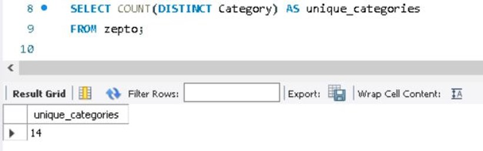
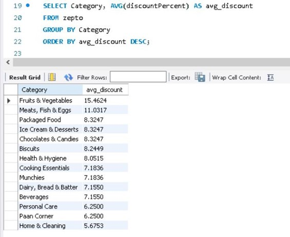
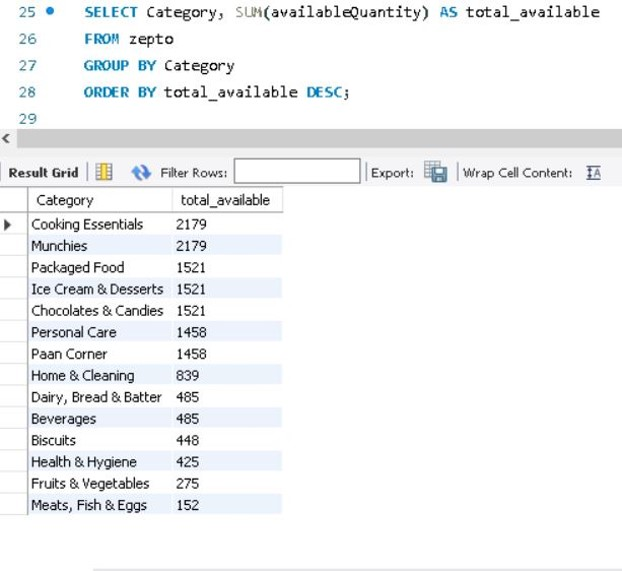
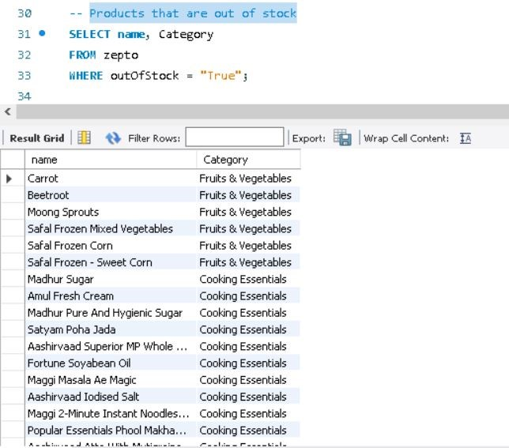
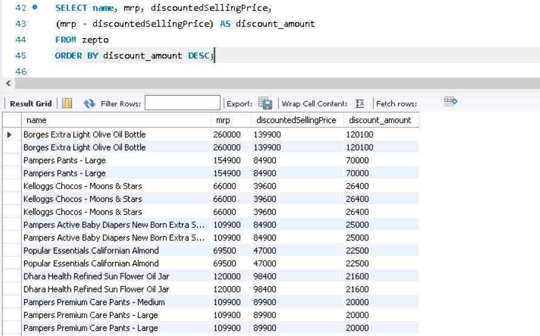
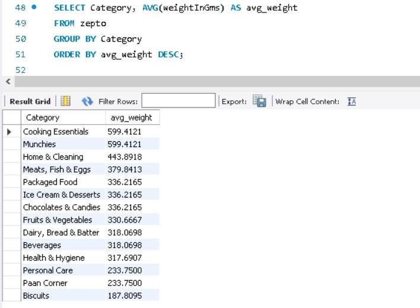
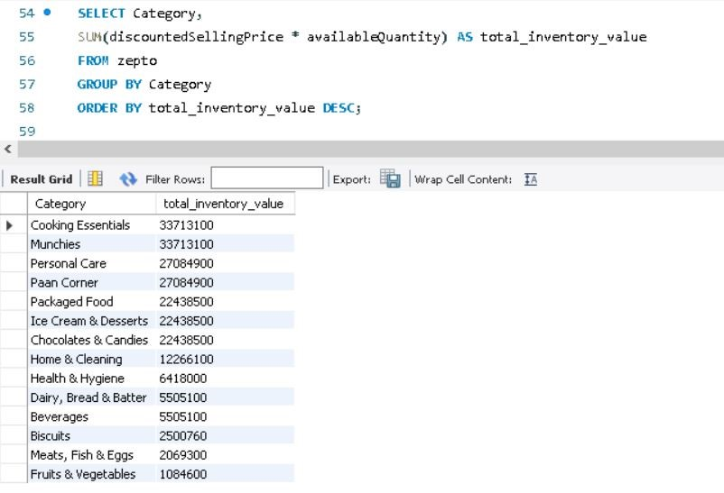
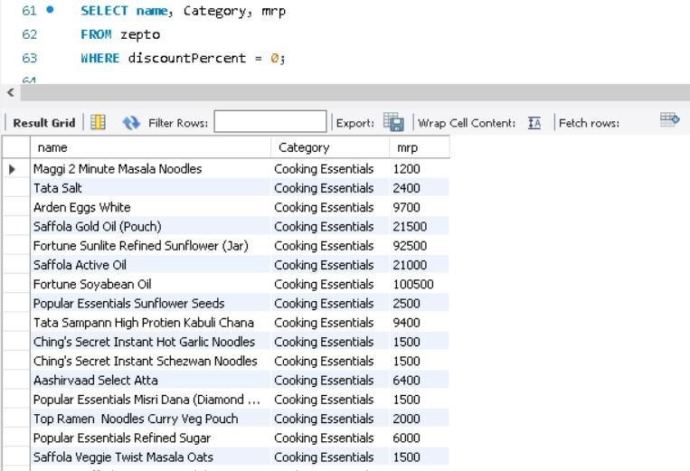
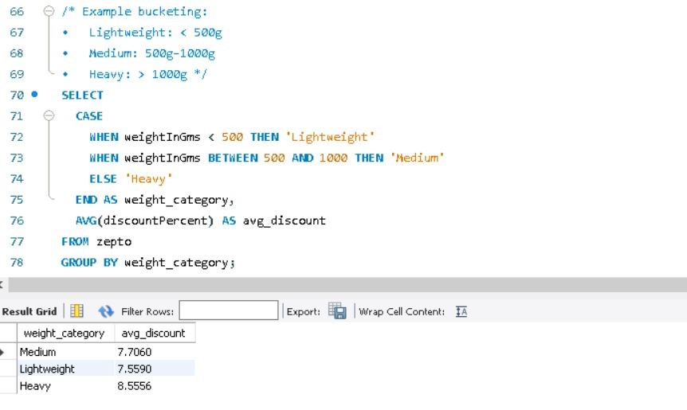

Storytelling with KPIs
1. Total number of products?

Our analysis begins with understanding the scale of the dataset. Zepto’s retail catalog consists of 3,728 product entries, representing a rich and diverse inventory across multiple categories. This indicates a broad product portfolio suitable for analyzing sales and inventory behavior across different product types.
2. Unique Product Categories
The dataset spans 14 unique product categories, from essentials like Cooking Essentials and Fruits & Vegetables to indulgent options such as Chocolates & Candies and Ice Creams & Desserts. This diversity allows us to study customer preferences across both necessity-driven and impulse-buy segments.
3. Top 5 Product Categories

When we look at product distribution, Cooking Essentials and Munchies lead with 512 items each. This shows Zepto’s strong focus on daily-use items and snackable products, catering to quick convenience needs. The next popular groups — Packaged Food, Desserts, and Candies — reflect customer demand for ready-to-eat and indulgent products, showing Zepto’s balanced mix of necessity and delight.
4. Average Discount by Category
Discount patterns tell a fascinating story. Fruits & Vegetables lead with the highest average discount, perhaps to attract daily shoppers or clear perishable inventory quickly. Meats and Eggs follow closely, suggesting promotional strategies to boost protein-category sales. Mid-range discounts on Packaged Food and Desserts highlight moderate competitiveness in these non-perishable segments.
5. Total Available Quantity Per Category
Availability data reflects stock management priorities. Cooking Essentials and Munchies again top the chart with the highest available quantities, emphasizing Zepto’s commitment to ensuring consistent supply of high-demand products. On the other hand, Meats & Eggs and Fruits & Vegetables have relatively lower availability, likely due to shorter shelf life and faster turnover.
6. Out-of-Stock Products
A quick look at the out-of-stock items reveals many belong to Fruits & Vegetables and Cooking Essentials. Items like Carrot, Beetroot, Moong Sprouts, and Madhur Sugar are missing from inventory. This suggests high demand and fast stock depletion in everyday essentials, highlighting areas where inventory replenishment needs improvement.
7. Price difference for each product
Premium products like olive oil and baby care items enjoy heavy absolute discounts—possibly due to promotional campaigns or price wars in premium grocery segments. This reflects how Zepto leverages large markdowns to attract high-value customers.
8. Average product Weight by Category
Heavier items dominate Cooking Essentials and Munchies, aligning with bulk purchase patterns. On the other hand, lightweight categories like Biscuits and Personal Care are designed for quick, frequent buys—highlighting Zepto’s product mix balance.
9. Total Inventory Value per category
Cooking Essentials and Munchies form the financial backbone of Zepto’s inventory. These categories not only dominate in quantity but also hold the greatest share of overall value—signifying their central role in revenue generation.
10. Products with 0% Discount
Core staples such as Maggi, salt, and edible oils are priced at full MRP—indicating strong brand dominance and consistent demand. These non-discounted products ensure stable margins and form Zepto’s reliable revenue stream.
11. Weight Category vs Average Discount
Heavier products receive the highest average discounts, likely to encourage bulk buying and faster movement of large inventory. This strategy aligns with Zepto’s goal of promoting high-volume sales through attractive discounts.